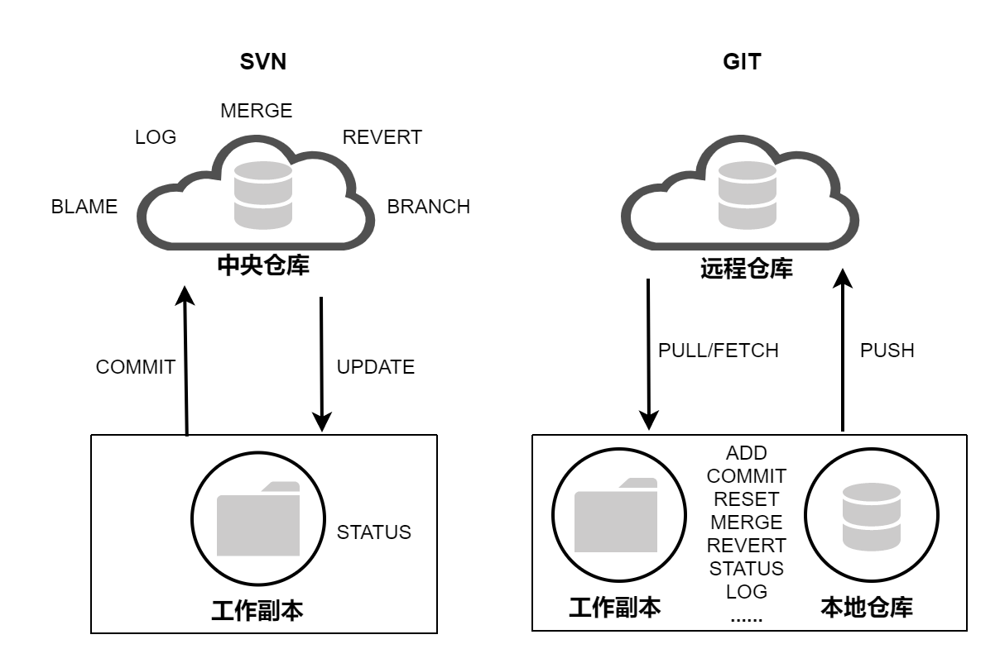
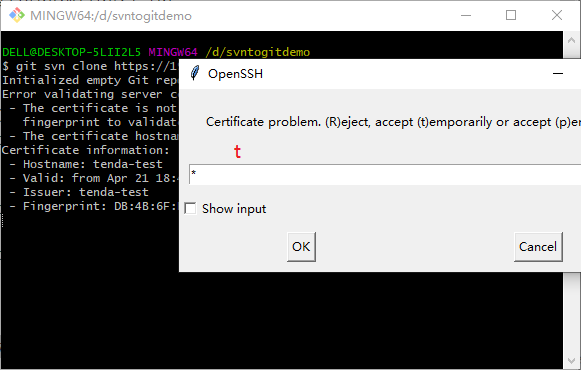
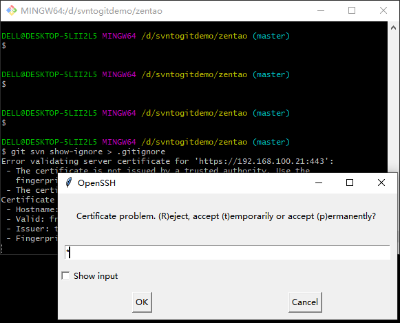

本文记录如何将SVN项目迁移到Git，并保留提交日志信息。
Git和SVN差异
Git是一个开源的分布式版本控制系统，由Linux之父Linus Torvalds于2005年开发，而SVN是一个集中式的版本控制系统。

Git和SVN的主要区别如下表：
| Git |
SVN |
| Git是分布式的 |
SVN是集中式的 |
| Git支持离线操作,有本地的版本控制 |
SVN必须联网操作，只有服务器上的版本控制 |
| 上传下载速度快 |
上传下载速度慢 |
| Git功能多，命令较多，有更多的概念和命令。 |
与git相比，SVN操作更简单。 |
| 开启分支方便、速度快 |
svn的分支是一个目录，拉分支较慢 |
以上是它们的主要差异，下面介绍如何将已有的SVN仓库迁移到空的Git仓库，另外，本文Git服务器使用Gerrit搭建。
环境准备
Git安装、配置
Git安装配置方法可参考Git简易教程-安装及简单使用 。
项目迁移
1. 将源SVN库转换到Git本地仓库
使用git-svn将源Subversion库转换为本地Git存储库。
1
| $ git svn clone https://192.168.100.21/svn/zentao
|

如果SVN项目有忽略文件，执行如下命令转换SVN:ignore属性为 .gitignore文件。
1
2
3
4
| cd c:\mytempdir
git svn show-ignore > .gitignore
git add .gitignore
git commit -m 'Convert svn:ignore properties to .gitignore.'
|

如果clone完成后，SVN仓库还有更新，可执行以下命令同步SVN更新：
2. 添加Git远程库地址
1
2
3
4
5
6
7
8
9
10
11
| $ git remote add origin "ssh://admin@192.168.100.22:29418/zentaopms"
$ git remote show origin
* remote origin
Fetch URL: ssh://admin@192.168.100.22:29418/zentaopms
Push URL: ssh://admin@192.168.100.22:29418/zentaopms
HEAD branch: master
Remote branch:
master tracked
Local ref configured for 'git push':
master pushes to master (up to date)
|
3. 推送代码到Git
1
2
3
4
5
6
7
8
9
10
11
12
| $ git push origin master:master --force
Enumerating objects: 2324, done.
Counting objects: 100% (2324/2324), done.
Delta compression using up to 4 threads
Compressing objects: 100% (2307/2307), done.
Writing objects: 100% (2324/2324), 3.50 MiB | 1.25 MiB/s, done.
Total 2324 (delta 691), reused 0 (delta 0), pack-reused 0
remote: Resolving deltas: 100% (691/691)
remote: Processing changes: refs: 1, done
To ssh://admin@192.168.100.22:29418/zentaopms
+ eef598e...07c6319 master -> master (forced update)
|
常见错误
推送代码报如下错误：
1
2
3
4
5
6
7
8
9
10
11
12
13
| $ git push origin master:master --force
Enumerating objects: 2324, done.
Counting objects: 100% (2324/2324), done.
Delta compression using up to 4 threads
Compressing objects: 100% (2307/2307), done.
Writing objects: 100% (2324/2324), 3.50 MiB | 1.32 MiB/s, done.
Total 2324 (delta 692), reused 0 (delta 0), pack-reused 0
remote: Resolving deltas: 100% (692/692)
remote: Processing changes: refs: 1, done
To ssh://admin@192.168.100.22:29418/zentaopms
! [remote rejected] master -> master (failed to lock)
error: failed to push some refs to 'ssh://admin@192.168.100.22:29418/zentaopms'
|
原因是当前用户没有push权限，到gerrit添加push 权限即可。
参考文档
- https://www.atlassian.com/git/tutorials/migrating-overview
- https://learn.microsoft.com/en-us/azure/devops/repos/git/perform-migration-from-svn-to-git?view=azure-devops
- https://www.gitkraken.com/blog/migrating-git-svn